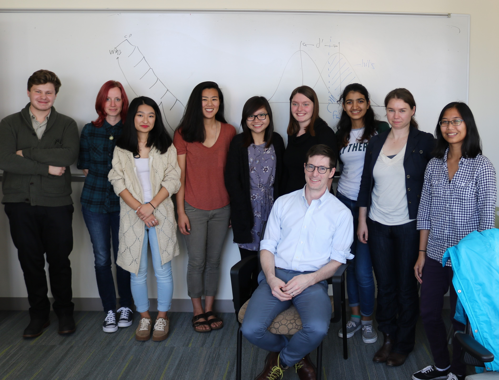

Cognitive Science of Language Lab¶

The Cognitive Science of Language Lab studies how readers and listeners recognize the syntactic structure of sentences, and how readers and listeners recognize the meaning of those sentences in context. Specific current projects ask:
- When, and to what degree, is the Binding Theory applied to constrain the interpretation of pronouns and reflexives? (Currently investigating: English, Romanian, Vietnamese)
- How do listeners/readers compute verb agreement and pronoun agreement? (Currently investigating: English, Hindi)
- How do listeners/readers process syntactic ambiguity, adjunct attachment, and filler-gap dependencies?
- How do listeners/readers process negation and negative polarity items? (Currently investigating: English, Romanian)
People¶
Current Lab Members:
PI: Brian Dillon (Associate Professor)
Caroline Andrews (Ph.D. student)
Sakshi Bhatia (Ph.D. student)
Thuy Bui (Ph.D. student)
Alex Göbel (Ph.D student)
Chris Hammerly (Ph.D student)
Rodica Ivan (Ph.D. student)
Erika Mayer (Ph.D. student)
Anissa Neal (Ph.D. student)
Niralee Gupta (Undergraduate student)
Christian Muxica (Undergraduate student)
Risa Komatsu (Undergraduate student)
Jessica Primavera (Undergraduate student)
Bhavya Pant (Undergraduate student)
Lab Basics¶
Ethics training¶
In order to begin working with human subjects in the lab, all researchers must complete ethics training via the Collaborative IRB Training Initiative (CITI). The link to the CITI Training is here (take the Group 2 course). Plan on spending around an hour on the training. Note that you will need to redo the course every five years!
Facilities and Equipment¶
We pursue a 'converging operations' approach, studying the questions above from many different angles, with many distinct methodologies. Common experimental techniques include:
- Eye-tracking-while-reading (EyeLab: N442)
- Self-paced reading (BehavLab: N447; Web-based)
- Speeded acceptability judgment studies (BehavLab: N447; Web-based)
- Recognition/recall tasks (BehavLab: N447; Web-based)
- Untimed survey studies (Web-based)
EyeLab (N442)
N442 is the EyeLab. It is used only for running eye-tracking-while-reading experiments. It can run one participant at a time and comes equipped with an SR Research Eyelink 1000 with a tower mount system.
- Basic information about the EyeLab
- For RAs running participants
- Getting an eye-tracking experiment running
- Analyzing eye-tracking data
BehavLab (N447)
N447 is the BehavLab. This room includes four identically outfitted iMac computers, and is for running any behavioral experiments on Linger/PsychoPy/IbexFarm. It can run four participants at a time.
Recruiting participants¶
We schedule sessions and recruit participants via the Linguistics SONA. To learn about how to use SONA as an RA, please see the SONA tutorial.
Communication¶
Slack is a messaging system intended to replace emails. Slack has several advantages: first and foremost, it keeps the history of communications related to a project in a single place. Second, it allows brief, rapid communication without the formality of email.
For access to the official lab channel click here.
Twitter is also highly recommended for fun, for raising your professional visibility, and for plugging in to on-going academic discussion. Follow your favorite psycholinguists; they have lots to say!
RMarkdown¶
For collaborative documents, we prefer RMarkdown.